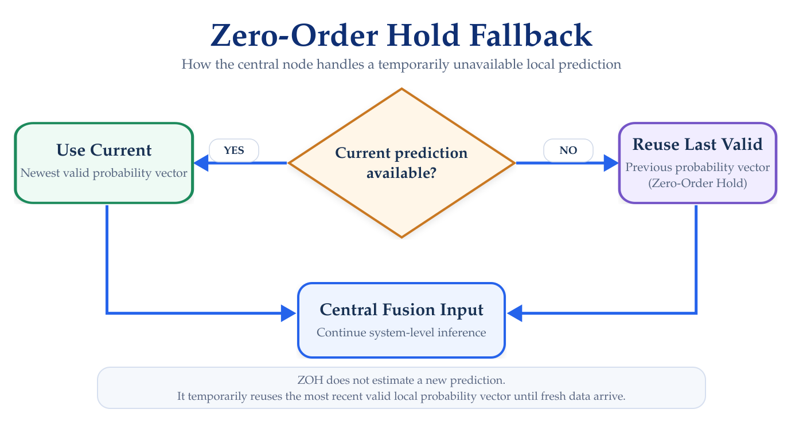
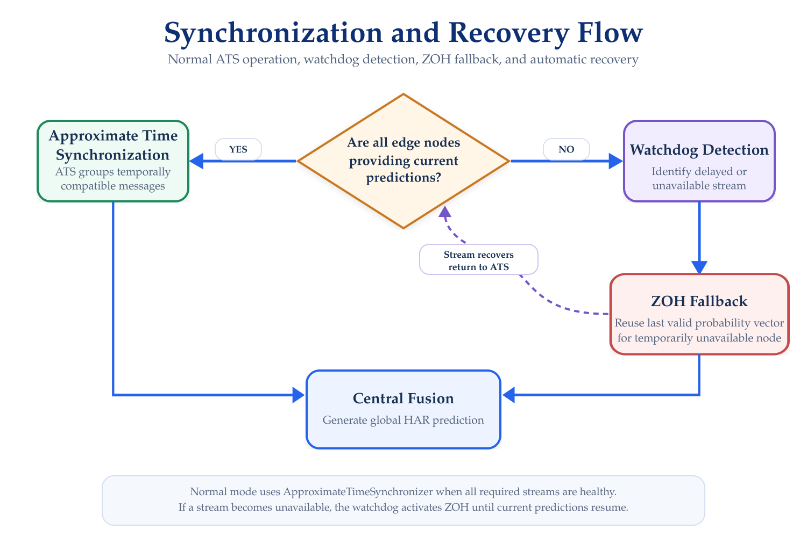

Communication & Synchronization
Prediction Exchange and Temporal Coordination
The HAR Distributed Framework uses ROS Noetic to exchange local activity predictions between the five edge nodes and the central node.
Communication occurs at the prediction level: each edge node publishes the probability vector generated by its local HAR model together with metadata required for identification, timing, and synchronization.
Before continuing, the distributed network and device clocks should already be configured as described in Network & Time Synchronization.
Communication Architecture
Each edge node publishes its local prediction through a dedicated ROS topic.
The central node subscribes to all five prediction streams and coordinates the incoming messages before central fusion.
The distributed prediction topics are:
| Edge Node | ROS Topic |
|---|---|
| Chest | /har/probs/chest |
| Left Hand | /har/probs/left_hand |
| Right Hand | /har/probs/right_hand |
| Left Knee | /har/probs/left_knee |
| Right Knee | /har/probs/right_knee |
The central node generates the global prediction through:
/har/probs/global
A visualization-oriented output is also available through:
/har/probs/global_ui
Prediction Message
Local predictions are exchanged using the custom ROS message:
har_msgs/Probs
The message contains both classification results and metadata required by the distributed runtime.
The implemented message structure includes:
std_msgs/Header |
header |
string |
sensor_id |
uint32 |
seq |
uint64 |
t0_ns |
uint64 |
t_send_ns |
uint8 |
K |
float32[] |
probs |
float32 |
dropped_pct |
Message Fields
| Field | Purpose |
|---|---|
header |
ROS message header and timestamp |
sensor_id |
Identifies the originating sensing node |
seq |
Local prediction sequence number |
t0_ns |
Initial timestamp associated with the prediction pipeline |
t_send_ns |
Time at which the local prediction is transmitted |
K |
Number of activity classes |
probs[] |
Activity probability vector |
dropped_pct |
Packet/data-drop information when applicable |
The probability vector contains the local model output:
[p0, p1, p2, p3, p4, p5]The interpretation of the six classes is documented under Models & Data.
Local Publication
After completing local inference, each edge node:
- Generates the activity probability vector
- Assigns the corresponding sensor identifier
- Updates the sequence number
- Records timing information
- Packages the information into
har_msgs/Probs - Publishes the message to its node-specific ROS topic
The central node therefore receives five independent prediction streams.
Central Reception
The central node subscribes to:
/har/probs/chest
/har/probs/left_hand
/har/probs/right_hand
/har/probs/left_knee
/har/probs/right_knee
Because these messages are produced on physically independent devices, they do not necessarily arrive at exactly the same time.
The synchronization layer determines which predictions can be combined before the central fusion model is executed.
Approximate Time Synchronization
Under normal operating conditions, the central node uses ROS:
ApproximateTimeSynchronizerto group predictions that are sufficiently close in time.
The implemented configuration uses:
Synchronization tolerance (slop): 0.05 s
Queue size: 10Therefore, messages whose timestamps fall within approximately:
50 mscan be considered part of the same synchronized prediction set.
Approximate synchronization does not require the five predictions to have identical timestamps.
Instead, it allows a controlled temporal tolerance between independently generated messages.
When compatible predictions from all required nodes are available, the synchronized set is forwarded to the central fusion process.
Synchronization Span
For each synchronized prediction set, the framework can measure the temporal difference between the earliest and latest participating prediction.
Conceptually:
sync_span = latest_timestamp - earliest_timestamp
This measurement provides an indication of how closely aligned the distributed predictions are before fusion.
The resulting synchronization metrics are documented under Experiments & Logs.
Missing or Delayed Predictions
A distributed wearable system cannot assume that every prediction will always arrive on time.
Temporary problems may include:
- Communication delay;
- BLE interruptions;
- Local inference delays;
- Packet loss;
- Temporary sensor disconnection; or
- Edge-node interruption.
To avoid stopping the complete HAR pipeline whenever one stream becomes temporarily unavailable, the framework includes a fallback mechanism.
Zero-Order Hold Fallback
When a current prediction from one node is temporarily unavailable, the system can reuse the most recent valid prediction from that node.
This strategy follows a Zero-Order Hold (ZOH) approach.
The decision process used by the ZOH fallback mechanism is illustrated in Figure 1.

The fallback allows the central fusion process to continue operating during short communication interruptions.
ZOH does not generate a new prediction.
It temporarily reuses the last valid probability vector received from the affected node.
Watchdog Mechanism
A watchdog mechanism monitors the availability of the distributed prediction streams. Its role is to determine whether each edge node is actively providing sufficiently recent predictions.
When all nodes are operating normally, the central system uses approximate synchronized prediction sets. If one or more nodes become unavailable, the framework can transition to the fallback mechanism.
When valid communication is restored, the system returns to normal synchronized operation. The transition between normal synchronized operation and the fallback mechanism is illustrated in Figure 2.

Central Fusion Trigger
Central fusion is executed once a valid set of local probability vectors is available.
This set may originate from:
- A normally synchronized ATS event; or
- The fallback mechanism when temporary prediction loss occurs.
The resulting input contains one probability vector from each sensing location.
The fusion model itself is documented under Models & Data.
Global Prediction Output
After central fusion, the system publishes the resulting global prediction.
The primary output topic is:
/har/probs/global
A visualization-specific output is also provided through:
/har/probs/global_ui
These outputs can be consumed by logging tools, visualization components, or other applications connected to the HAR framework.
Start and Stop Control
The real-time framework also includes ROS-based execution control.
The visualization layer can publish:
/har/start_ui
which is used to control the system-level start signal:
/har/start
The complete operational procedure is documented under Running the Framework.
Verification
Before running a full experiment, verify the communication layer incrementally.
Verify Edge Topics
From the ROS environment, check:
rostopic listThe expected local prediction topics should be visible.
Inspect a Local Prediction
For example:
rostopic echo /har/probs/chestVerify that:
sensor_idis correct;- sequence numbers are increasing;
- timestamps are being generated;
Khas the expected value; andprobscontains the expected number of elements.
Check Publication Rate
For example:
rostopic hz /har/probs/chestRepeat the test for the remaining edge nodes.
Verify Global Output
Once the five distributed inputs are available:
rostopic echo /har/probs/globalA valid global prediction indicates that reception, synchronization, and fusion are operating together.
Troubleshooting
One Edge Topic Is Missing
Verify the corresponding edge node under Edge Nodes.
Confirm that local inference is running and that prediction messages are being published.
Topic Exists but Messages Do Not Arrive
Verify the base ROS network configuration described in Network & Time Synchronization.
Synchronization Does Not Trigger
Check that:
- all required prediction streams are active;
- timestamps are valid;
- device clocks are synchronized;
- prediction timing is within the configured synchronization tolerance; and
- the synchronization queue is receiving all streams.
System Remains in Fallback Mode
Verify that all five edge nodes have resumed publishing current predictions.
The watchdog should return the system to normal synchronized operation once all required streams are healthy again.
Next Step
Continue with:
The next section documents the signal configuration, model inputs, local HAR models, central fusion model, activity classes, and trained model resources used by the framework.